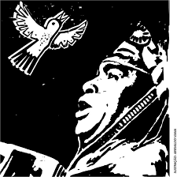

Asa Branca
Luiz Gonzaga

LETRA
Quando olhei a terra ardendo
Qual fogueira de São João
Eu perguntei a Deus do céu, ai
Por que tamanha judiação
Eu perguntei a Deus do céu, ai
Por que tamanha judiação?
Que braseiro, que fornalha
Nem um pé de plantação
Por falta d'água perdi meu gado
Morreu de sede meu alazão
Por farta d'água perdi meu gado
Morreu de sede meu alazão
Inté mesmo a asa branca
Bateu asas do sertão
Entonce eu disse, adeus Rosinha
Guarda contigo meu coração
Entonce eu disse, adeus Rosinha
Guarda contigo meu coração
Hoje longe, muitas léguas
Numa triste solidão
Espero a chuva cair de novo
Pra mim voltar pro meu sertão
Espero a chuva cair de novo
Pra mim voltar pro meu sertão
Quando o verde dos teus olhos
Se espalhar na plantação
Eu te asseguro não chore não, viu
Que eu voltarei, viu
Meu coração
Eu te asseguro não chore não, viu
Que eu voltarei, viu
Meu coração